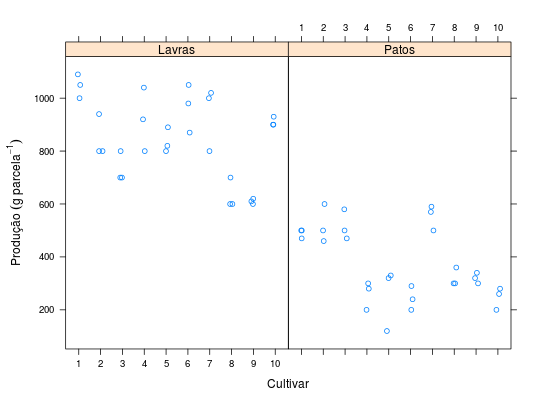

Experimentos para medir a produção de grãos de cultivares de feijão, conduzidos em Lavras e Patos de Minas/MG durante o ano de 1990 em delineamento em blocos casualizados.
Um data.frame com 60 observações e 4 variáveis, em que
cultlocalblocprodRAMALHO et al. (2005), Exemplo 8.1, pág. 115.
library(lattice) data(RamalhoEg8.1)#> Warning: data set ‘RamalhoEg8.1’ not foundstr(RamalhoEg8.1)#> 'data.frame': 60 obs. of 4 variables: #> $ cult : Factor w/ 10 levels "1","2","3","4",..: 1 2 3 4 5 6 7 8 9 10 ... #> $ local: Factor w/ 2 levels "Lavras","Patos": 1 1 1 1 1 1 1 1 1 1 ... #> $ bloc : Factor w/ 3 levels "1","2","3": 1 1 1 1 1 1 1 1 1 1 ... #> $ prod : int 1000 800 700 920 820 980 1020 600 620 930 ...xtabs(~cult + local, data = RamalhoEg8.1)#> local #> cult Lavras Patos #> 1 3 3 #> 2 3 3 #> 3 3 3 #> 4 3 3 #> 5 3 3 #> 6 3 3 #> 7 3 3 #> 8 3 3 #> 9 3 3 #> 10 3 3xyplot(prod ~ cult | local, data = RamalhoEg8.1, jitter.x = TRUE, xlab = "Cultivar", ylab = expression("Produção"~(g~parcela^{-1})))ftable(with(RamalhoEg8.1, tapply(prod, list(local, cult, bloc = bloc), FUN = identity)))#> bloc 1 2 3 #> #> Lavras 1 1000 1090 1050 #> 2 800 940 800 #> 3 700 700 800 #> 4 920 1040 800 #> 5 820 800 890 #> 6 980 870 1050 #> 7 1020 1000 800 #> 8 600 600 700 #> 9 620 600 610 #> 10 930 900 900 #> Patos 1 470 500 500 #> 2 460 600 500 #> 3 500 470 580 #> 4 200 280 300 #> 5 120 320 330 #> 6 200 290 240 #> 7 590 570 500 #> 8 300 360 300 #> 9 300 340 320 #> 10 200 260 280aggregate(prod ~ cult + local, data = RamalhoEg8.1, FUN = function(x) { c(mean = mean(x), var = var(x)) })#> cult local prod.mean prod.var #> 1 1 Lavras 1046.6667 2033.3333 #> 2 2 Lavras 846.6667 6533.3333 #> 3 3 Lavras 733.3333 3333.3333 #> 4 4 Lavras 920.0000 14400.0000 #> 5 5 Lavras 836.6667 2233.3333 #> 6 6 Lavras 966.6667 8233.3333 #> 7 7 Lavras 940.0000 14800.0000 #> 8 8 Lavras 633.3333 3333.3333 #> 9 9 Lavras 610.0000 100.0000 #> 10 10 Lavras 910.0000 300.0000 #> 11 1 Patos 490.0000 300.0000 #> 12 2 Patos 520.0000 5200.0000 #> 13 3 Patos 516.6667 3233.3333 #> 14 4 Patos 260.0000 2800.0000 #> 15 5 Patos 256.6667 14033.3333 #> 16 6 Patos 243.3333 2033.3333 #> 17 7 Patos 553.3333 2233.3333 #> 18 8 Patos 320.0000 1200.0000 #> 19 9 Patos 320.0000 400.0000 #> 20 10 Patos 246.6667 1733.3333